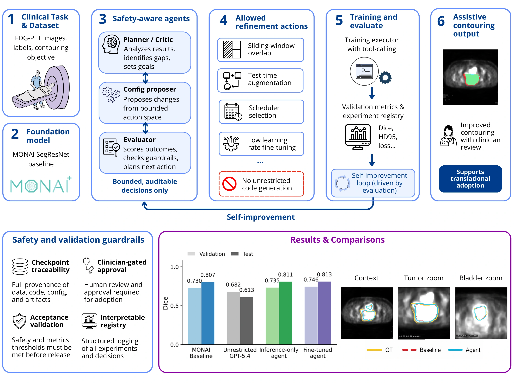

Abstract
Precise tumor delineation is fundamental to effective radiotherapy planning. While PET imaging is a primary tool for this task, its accuracy can be compromised by high physiologic uptake in adjacent organs, which can obscure tumor margins. This is particularly relevant for locally advanced cervical cancer, where intense bladder activity often overlaps the tumor, complicating manual differentiation. Automated segmentation could address these challenges by distinguishing malignant tissue from its surroundings. However, unconstrained autonomous optimization is poorly suited for clinical use, as unchecked model changes may compromise validation and interpretability. We therefore developed a safety-aware agentic AI workflow to refine a strong segmentation baseline under auditable control.
We evaluated our system on an FDG-PET cohort of 292 patients with locally advanced cervical cancer (211 training, 37 validation, 44 test cases). Our system used MONAI SegResNet as the foundation model, with the agent restricted to clinically interpretable refinement actions, including sliding-window overlap, test-time augmentation, checkpoint fine-tuning, and scheduler selection. The agent did not rewrite the pipeline; it proposed experiments, registered changes, evaluated results, and generated critiques under minimal clinician supervision.
The frozen baseline achieved validation Dice of 0.7295. In contrast, a fully autonomous GPT-5.4 agent attempting unrestricted pipeline generation reached only 0.6818, significantly underperforming the baseline. Our proposed agentic AI system identified and experimented on inference-time refinements, improving baseline validation/test Dice to 0.7352 and 0.8107 without changing model weights. With human approval, the agent then performed low-learning-rate fine-tuning with cosine scheduling, which further improved validation/test Dice to the highest observed performance of 0.7455 and 0.8126.
These findings show that a safety-aware agentic AI system offers a clinically credible path for AI integration in contouring workflows. By improving performance while preserving interpretability, validation discipline, and clinician oversight, this assistive workflow may facilitate model integration for clinically relevant PET contouring workflows.
Method and results


View full size ↗